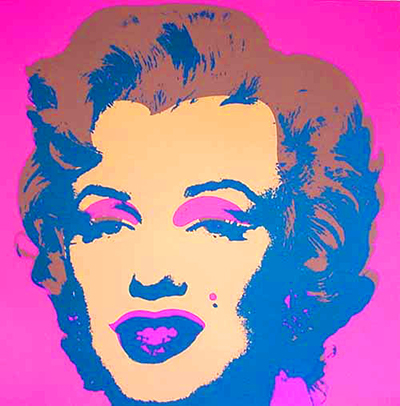
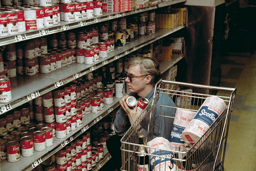
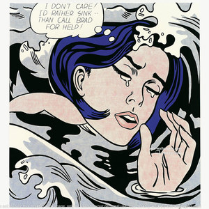

Pop Art
What is Pop art about?
Pop art is an art movement that emerged in the middle 1950s in Britain and the late 1950s in the United States and ended in the beginning of the 1970s. The movement presented a challenge to traditions of fine art by including imagery from popular and mass culture (advertising, comic books, celebrities etc.). The movement was officially christened by Lawrence Alloway in his article "The Arts and Mass Media," Architectural Record (February 1958). Art history text books tend to claim that Richard Hamilton's Just What Is It that Makes Today's Home So Different and So Appealing? (1956) signaled that Pop Art had arrived on the scene.

The first application of the term Pop Art occurred during discussions among artists who called themselves the Independent Group (IG), which was part of the Institute of Contemporary Art in London. They first began to appropriate idealized images of the American lifestyle they found in popular magazines as part of their critique of British society, which suffered great economic hardship a fter t he war. Pop art is widely interpreted as a reaction to the then-dominant ideas of a bstract expressionism, as well as an expansion of those ideas. Due to its utilization of found objects and images, it is similar to Dadaism. Pop art and Mi nimalism are considered to be art movements that precede postmodern art, or are some of the earliest examples of postmodern art t hemselves.
USA
Although pop art began in the late 1950s in Britain, in America it was given its greatest impetus during the 1960s, especially in New York. Meanwhile British artists took Pop Art there in a more academic way, in US, surrounded by the products of consumer culture, American Pop artists were inspired by what they saw and experienced living within that culture. They were taking inspiration from sources in popular and commercial culture such as advertising, Hollywood movies and pop music. It began as a revolt against the dominant approaches to art and culture and traditional views on what art could and should be. Drawing on popular imagery and mass-produced consumer products, Pop art elevated aspects of everyday culture in the middle of the 20th century to the status of art, but the intention was not to glorify those things but to view them with a critical lens through the use of irony and satire.
Key Characteristics of Pop Art
▪ Recognizable imagery,drawn from popular media and products ▪ Usually very bright colors ▪ Flat imagery influenced by comic books and newspaper photographs ▪ Images of celebrities or fictional characters in comic books, advertisements and fan magazines

Leading pop artists
ANDY WARHOL
One of the founding fathers of the Pop art movement and one of the most influential artists of the second half of the 20th century, creating most recognizable images ever produced.

ROY LICHTENSTEIN
His work defined the premise of pop art through parody, influenced by popular advertising and the comic book style.

CLAES OLDENBURG
An American sculptor, best known for his public art installations typically featuring large replicas of everyday objects.